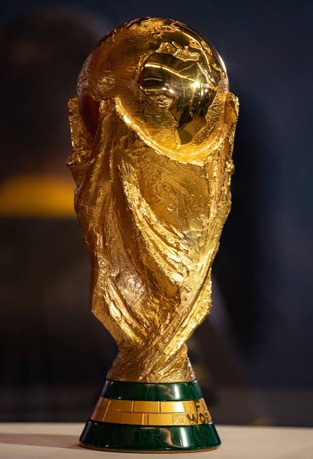

Estados Unidos · Canadá · México — de 11 junho a 19 de julho de 2026

A Copa de 2026 é a 23ª edição do torneio e entrou para história antes
mesmo de começar:foi e primeira disputada por 48 seleções, contra 32
nas edições anteriores.
Também foi a primeira Copa organizada por três países ao mesmo tempo.
Página produzida na aula de programação web — Semana 2.